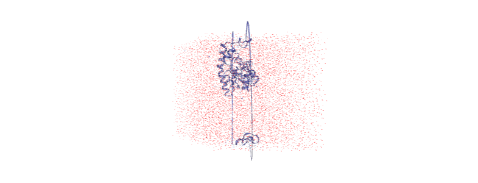
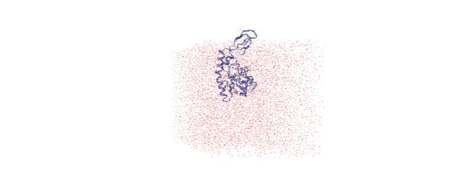
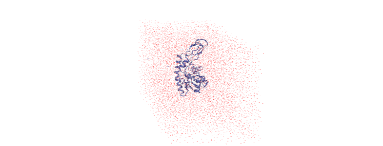

Centering a trajectory in the box¶
Here we use MDAnalysis transformations to make a protein whole, center it in the box, and then wrap the water back into the box. We then look at how to do this on-the-fly.
Last executed: Feb 07, 2020 with MDAnalysis 0.20.2-dev0
Last updated: January 2020
Minimum version of MDAnalysis: 0.19.0
Packages required:
Optional packages for visualisation:
[1]:
import MDAnalysis as mda
from MDAnalysis.tests.datafiles import TPR, XTC
import numpy as np
import nglview as nv
Loading files¶
The test files we will be working with here are trajectories of a adenylate kinase (AdK), a phosophotransferase enzyme. ([BDPW09])
For the step-by-step transformations, we need to load the trajectory into memory so that our changes to the coordinates persist. If your trajectory is too large for that, see the on-the-fly transformation section for how to do this out-of-memory.
[2]:
u = mda.Universe(TPR, XTC, in_memory=True)
Before transformation¶
If you have NGLView installed, you can view the trajectory as it currently is.
[ ]:
view = nv.show_mdanalysis(u)
view.add_representation('point', 'resname SOL')
view.center()
view
Otherwise, we embed a gif of it below.

For easier analysis and nicer visualisation, we want to center this protein in the box.
Unwrapping the protein¶
The first step is to “unwrap” the protein from the border of the box, to make the protein whole. MDAnalysis provides the AtomGroup.unwrap function to do this easily. Note that this function requires your universe to have bonds in it.
We loop over the trajectory to unwrap for each frame.
[3]:
protein = u.select_atoms('protein')
for ts in u.trajectory:
protein.unwrap(compound='fragments')
As you can see, the protein is now whole, but not centered.
[ ]:
unwrapped = nv.show_mdanalysis(u)
unwrapped.add_representation('point', 'resname SOL')
unwrapped.center()
unwrapped
Over the course of the trajectory it leaves the box.

Centering in the box¶
The next step is to center the protein in the box. We calculate the center-of-mass of the protein and the center of the box for each timestep. We then move all the atoms so that the protein center-of-mass is in the center of the box.
If you don’t have masses in your trajectory, try using the center_of_geometry.
[4]:
for ts in u.trajectory:
protein_center = protein.center_of_mass(pbc=True)
dim = ts.triclinic_dimensions
box_center = np.sum(dim, axis=0) / 2
u.atoms.translate(box_center - protein_center)
The protein is now in the center of the box, but the solvent is likely outside it, as we have just moved all the atoms.
[ ]:
centered = nv.show_mdanalysis(u)
centered.add_representation('point', 'resname SOL')
centered.center()
centered
Wrapping the solvent back into the box¶
Luckily, MDAnalysis also has AtomGroup.wrap to wrap molecules back into the box. Our trajectory has dimensions defined, which the function will find automatically. If your trajectory does not, or you wish to use a differently sized box, you can pass in a box with dimensions in the form [lx, ly, lz, alpha, beta, gamma].
[5]:
not_protein = u.select_atoms('not protein')
for ts in u.trajectory:
not_protein.wrap(compound='residues')
And now it is centered!
[ ]:
wrapped = nv.show_mdanalysis(u)
wrapped.add_representation('point', 'resname SOL')
wrapped.center()
wrapped
Doing all this on-the-fly¶
Running all the transformations above can be difficult if your trajectory is large, or your computational resources are limited. Use on-the-fly transformations to keep your data out-of-memory.
Some common transformations are defined in MDAnalysis.transformations.
[7]:
import MDAnalysis.transformations as trans
We re-load our universe.
[8]:
u2 = mda.Universe(TPR, XTC)
protein2 = u2.select_atoms('protein')
not_protein2 = u2.select_atoms('not protein')
If you are using MDAnalysis from version 0.21.0 onwards, the MDAnalysis.transformations module contains wrap and unwrap functions. If not, we need to define a transformation ourselves.
A transformation is a function takes a MDAnalysis.coordinates.base.Timestep of a trajectory, modifies the positions, and returns the timestep.
[9]:
def unwrap(ts):
protein2.unwrap()
return ts
def wrap(ts):
not_protein2.wrap()
return ts
If you need arguments besides the timestep, you can return a wrapped function. The outer function contains your other arguments. The inner wrapped_function function only takes the ts argument and returns it, as usual.
[10]:
def unwrap_atomgroup(ag):
def wrapped_function(ts):
ag.unwrap()
return ts
return wrapped_function
def wrap_atomgroup(ag):
def wrapped_function(ts):
ag.wrap()
return ts
return wrapped_function
At this point, you can pass your transformations into your trajectory. You can only use add_transformations once, so pass them all in at once.
[11]:
transforms = [unwrap_atomgroup(protein2),
trans.center_in_box(protein2, wrap=True),
wrap_atomgroup(not_protein2)]
u2.trajectory.add_transformations(*transforms)
[ ]:
otf = nv.show_mdanalysis(u2)
otf.add_representation('point', 'resname SOL')
otf.center()
otf

References¶
[1] Richard J. Gowers, Max Linke, Jonathan Barnoud, Tyler J. E. Reddy, Manuel N. Melo, Sean L. Seyler, Jan Domański, David L. Dotson, Sébastien Buchoux, Ian M. Kenney, and Oliver Beckstein. MDAnalysis: A Python Package for the Rapid Analysis of Molecular Dynamics Simulations. Proceedings of the 15th Python in Science Conference, pages 98–105, 2016. 00152. URL: https://conference.scipy.org/proceedings/scipy2016/oliver_beckstein.html, doi:10.25080/Majora-629e541a-00e.
[2] Naveen Michaud-Agrawal, Elizabeth J. Denning, Thomas B. Woolf, and Oliver Beckstein. MDAnalysis: A toolkit for the analysis of molecular dynamics simulations. Journal of Computational Chemistry, 32(10):2319–2327, July 2011. 00778. URL: http://doi.wiley.com/10.1002/jcc.21787, doi:10.1002/jcc.21787.
[3] Hai Nguyen, David A Case, and Alexander S Rose. NGLview–interactive molecular graphics for Jupyter notebooks. Bioinformatics, 34(7):1241–1242, April 2018. 00024. URL: https://academic.oup.com/bioinformatics/article/34/7/1241/4721781, doi:10.1093/bioinformatics/btx789.
[4] Oliver Beckstein, Elizabeth J. Denning, Juan R. Perilla, and Thomas B. Woolf. Zipping and Unzipping of Adenylate Kinase: Atomistic Insights into the Ensemble of Open↔Closed Transitions. Journal of Molecular Biology, 394(1):160–176, November 2009. 00107. URL: https://linkinghub.elsevier.com/retrieve/pii/S0022283609011164, doi:10.1016/j.jmb.2009.09.009.